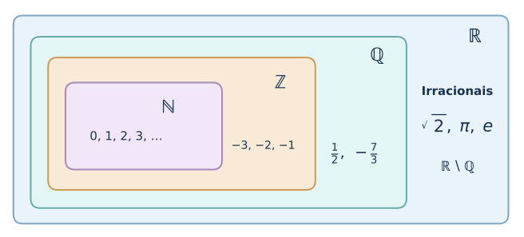
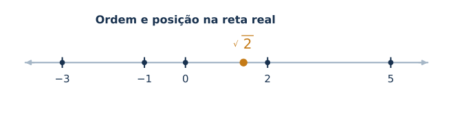
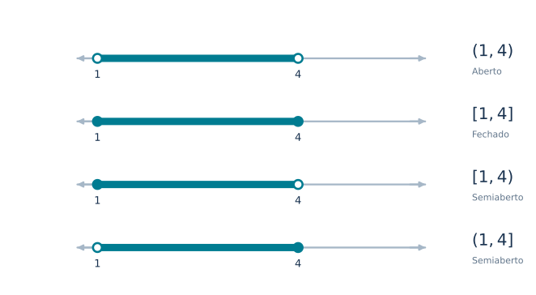
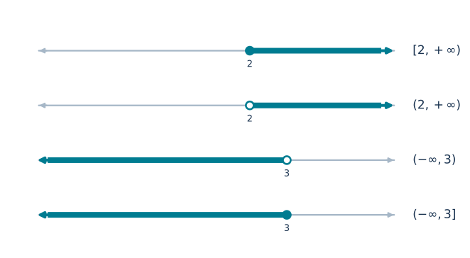
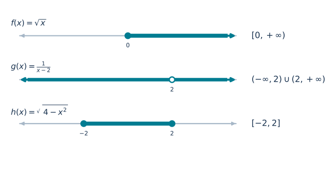
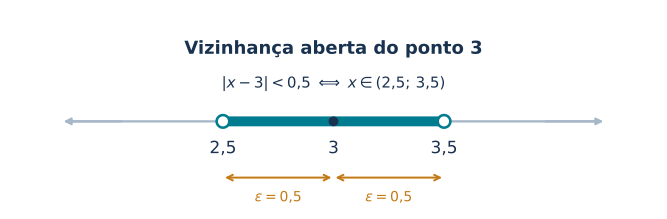
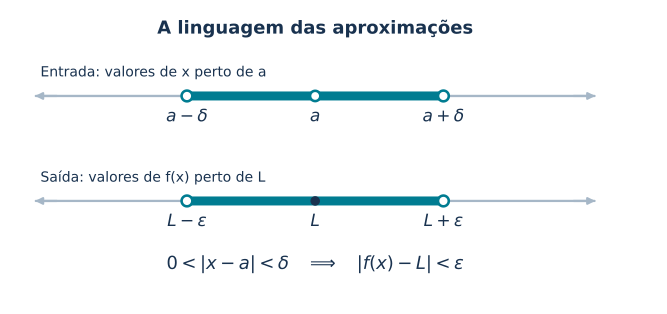

📘 Módulo 1.4: Números Reais e Intervalos
🏠 ← Sumário do Curso · ← Cursos de Matemática · ← Seção de Matemática
🎯 Post Anterior: 👉 1.3 Intervalos e Inequações
1 📘 Módulo 1.4: Números Reais e Intervalos
Por que o conjunto dos números reais é a base natural para estudar limites, derivadas e integrais?
Ao final deste módulo, você deverá ser capaz de:
- reconhecer o conjunto dos números reais como o ambiente natural do Cálculo de uma variável;
- compreender a cadeia de inclusões entre \(\mathbb{N}\), \(\mathbb{Z}\), \(\mathbb{Q}\) e \(\mathbb{R}\);
- representar subconjuntos da reta real por meio de intervalos;
- interpretar intervalos abertos, fechados, semiabertos e infinitos;
- relacionar intervalos, valor absoluto e vizinhanças;
- perceber por que essa linguagem será essencial para funções, limites, continuidade, derivadas e integrais.
2 🔢 Por que voltar aos números reais?
À primeira vista, pode parecer estranho dedicar uma aula inteira aos números reais depois de já termos estudado conjuntos numéricos, intervalos, inequações e valor absoluto. Mas há uma razão pedagógica importante para isso.
O Cálculo Diferencial e Integral de uma variável real estuda, em sua forma mais clássica, funções reais de variável real:
\[ f: A \subset \mathbb{R} \longrightarrow \mathbb{R}. \]
Isso significa que os valores de entrada pertencem a algum subconjunto dos números reais e os valores de saída também são números reais.
Quando estudamos limites, perguntamos o que acontece com \(f(x)\) quando \(x\) se aproxima de um número real. Quando estudamos derivadas, analisamos a variação de uma função perto de um ponto da reta real. Quando estudamos integrais definidas, acumulamos valores ao longo de um intervalo real.
Portanto, antes de avançar para funções e limites, precisamos ter segurança com três ideias fundamentais:
- a estrutura dos números reais;
- a representação geométrica pela reta real;
- a linguagem dos intervalos e das vizinhanças.
Este módulo faz essa consolidação.
3 📘 A cadeia dos conjuntos numéricos
O conjunto dos números reais é denotado por \(\mathbb{R}\). Ele contém os números naturais, inteiros, racionais e irracionais.
A cadeia de inclusões mais usada no Cálculo é:
\[ \mathbb{N} \subset \mathbb{Z} \subset \mathbb{Q} \subset \mathbb{R}. \]
Cada conjunto amplia o anterior.
Os números naturais são usados para contar:
\[ \mathbb{N} = \{0,1,2,3,\ldots\}. \]
Alguns autores começam os naturais em \(1\). Neste curso, adotaremos a convenção \(\mathbb{N} = \{0,1,2,3,\ldots\}\) quando isso for relevante.
Os números inteiros incluem os naturais, seus opostos e o zero:
\[ \mathbb{Z} = \{\ldots,-3,-2,-1,0,1,2,3,\ldots\}. \]
Os números racionais são aqueles que podem ser escritos como razão entre dois inteiros, com denominador diferente de zero:
\[ \mathbb{Q} = \left\{ \frac{p}{q} \mid p,q \in \mathbb{Z},\ q \neq 0 \right\}. \]
Exemplos de números racionais são:
\[ \frac{1}{2}, \qquad -\frac{7}{3}, \qquad 5, \qquad 0{,}25, \qquad 1{,}333\ldots \]
Todo número inteiro é racional, pois qualquer inteiro \(n\) pode ser escrito como:
\[ n = \frac{n}{1}. \]
Mas nem todo número real é racional. Existem números reais que não podem ser escritos como fração de inteiros. Esses números são chamados irracionais.
Exemplos importantes são:
\[ \sqrt{2}, \qquad \sqrt{3}, \qquad \pi, \qquad e. \]
Assim, podemos escrever:
\[ \mathbb{R} = \mathbb{Q} \cup \left(\mathbb{R} \setminus \mathbb{Q}\right). \]
Ou seja: os reais são formados pelos racionais e pelos irracionais.

4 🔢 A reta real
A interpretação geométrica dos números reais é feita por meio da reta real. Cada número real corresponde a um ponto da reta, e cada ponto da reta corresponde a um número real.
Essa correspondência é uma das ideias mais poderosas da Matemática elementar: ela transforma números em geometria e geometria em números.
Na reta real, podemos comparar números. Se \(a < b\), então \(a\) está à esquerda de \(b\). Se \(a > b\), então \(a\) está à direita de \(b\).
Por exemplo:
\[ -3 < -1 < 0 < 2 < 5. \]
Essa relação de ordem será fundamental em todo o curso. Ela aparece em desigualdades, intervalos, domínios de funções, limites laterais, crescimento de funções e regiões de integração.

Pensar em \(\mathbb{R}\) como uma reta ajuda a enxergar expressões algébricas como regiões geométricas.
Por exemplo, a desigualdade
\[ x > 2 \]
não descreve apenas uma condição algébrica. Ela descreve todos os pontos da reta real que estão à direita de \(2\).
5 📏 Intervalos como subconjuntos da reta real
Um intervalo é um subconjunto da reta real formado por todos os números entre dois extremos. Esses extremos podem ou não pertencer ao intervalo.
5.1 🚪 Intervalo aberto
O intervalo aberto entre \(a\) e \(b\) é escrito como:
\[ (a,b) = \{x \in \mathbb{R} \mid a < x < b\}. \]
Nesse caso, os extremos \(a\) e \(b\) não pertencem ao intervalo.
Por exemplo:
\[ (1,4) = \{x \in \mathbb{R} \mid 1 < x < 4\}. \]
Esse intervalo contém números como \(2\), \(3\), \(1{,}5\) e \(\sqrt{2}\), mas não contém os números \(1\) e \(4\).
5.2 🔒 Intervalo fechado
O intervalo fechado entre \(a\) e \(b\) é escrito como:
\[ [a,b] = \{x \in \mathbb{R} \mid a \leq x \leq b\}. \]
Nesse caso, os extremos pertencem ao intervalo.
Por exemplo:
\[ [1,4] = \{x \in \mathbb{R} \mid 1 \leq x \leq 4\}. \]
Esse intervalo contém todos os números reais entre \(1\) e \(4\), incluindo \(1\) e \(4\).
5.3 📏 Intervalos semiabertos
Também existem intervalos semiabertos, ou semifechados, nos quais apenas um dos extremos pertence ao intervalo.
Temos:
\[ [a,b) = \{x \in \mathbb{R} \mid a \leq x < b\}, \]
e
\[ (a,b] = \{x \in \mathbb{R} \mid a < x \leq b\}. \]
No intervalo \([a,b)\), o extremo esquerdo pertence ao intervalo, mas o extremo direito não pertence. No intervalo \((a,b]\), ocorre o contrário: o extremo esquerdo não pertence, mas o extremo direito pertence.

6 📏 Intervalos infinitos
Também usamos intervalos que se estendem indefinidamente para a direita ou para a esquerda.
Por exemplo:
\[ (a,+\infty) = \{x \in \mathbb{R} \mid x > a\}, \]
\[ [a,+\infty) = \{x \in \mathbb{R} \mid x \geq a\}, \]
\[ (-\infty,b) = \{x \in \mathbb{R} \mid x < b\}, \]
e
\[ (-\infty,b] = \{x \in \mathbb{R} \mid x \leq b\}. \]
Os símbolos \(-\infty\) e \(+\infty\) não são números reais. Eles indicam apenas que o intervalo se estende indefinidamente para a esquerda ou para a direita.
Por isso, nunca usamos colchetes junto de \(-\infty\) ou \(+\infty\).
Escrevemos:
\[ (-\infty,3] \]
e não:
\[ [-\infty,3]. \]

7 📏 Intervalos e domínios de funções
Em Cálculo, intervalos aparecem o tempo todo. O domínio de uma função pode ser um intervalo. A continuidade de uma função pode ser analisada em um intervalo. A derivada pode ser estudada em um intervalo aberto. A integral definida calcula uma quantidade acumulada em um intervalo fechado.
Vamos ver alguns exemplos.
7.1 ✅ Exemplo 1: raiz quadrada
Considere:
\[ f(x) = \sqrt{x}. \]
Essa função está definida, no contexto dos números reais, para todos os valores de \(x\) tais que:
\[ x \geq 0. \]
Portanto, seu domínio real é:
\[ [0,+\infty). \]
7.2 ✅ Exemplo 2: função racional
Considere:
\[ g(x) = \frac{1}{x-2}. \]
Essa função não está definida em \(x=2\), pois teríamos divisão por zero. Assim, seu domínio é:
\[ (-\infty,2) \cup (2,+\infty). \]
Observe que, nesse caso, o domínio não é um único intervalo, mas a união de dois intervalos.
7.3 ✅ Exemplo 3: raiz com expressão quadrática
Considere:
\[ h(x) = \sqrt{4-x^2}. \]
Para que essa função esteja definida nos reais, precisamos ter:
\[ 4 - x^2 \geq 0. \]
Isso equivale a:
\[ x^2 \leq 4. \]
Logo:
\[ -2 \leq x \leq 2. \]
Portanto, o domínio da função é:
\[ [-2,2]. \]
Esse exemplo mostra como desigualdades e intervalos aparecem naturalmente quando estudamos funções reais.

8 📏 Intervalos e valor absoluto
A aula anterior aprofundou o valor absoluto como distância na reta real. Agora podemos conectar essa ideia com intervalos.
A distância entre \(x\) e \(a\) na reta real é:
\[ |x-a|. \]
Assim, a desigualdade:
\[ |x-a| < \varepsilon \]
significa que a distância entre \(x\) e \(a\) é menor que \(\varepsilon\).
Isso é equivalente a:
\[ a-\varepsilon < x < a+\varepsilon. \]
Em forma de intervalo:
\[ x \in (a-\varepsilon,a+\varepsilon). \]
Uma vizinhança aberta de centro \(a\) e raio \(\varepsilon > 0\) é o intervalo:
\[ (a-\varepsilon,a+\varepsilon). \]
Equivalentemente:
\[ |x-a| < \varepsilon. \]
Por exemplo, se \(a=3\) e \(\varepsilon = 0{,}5\), então a vizinhança aberta de centro \(3\) e raio \(0{,}5\) é:
\[ (3-0{,}5,3+0{,}5) = (2{,}5,3{,}5). \]
Esse intervalo contém todos os números reais que estão a uma distância menor que \(0{,}5\) de \(3\).

9 🎯 Por que vizinhanças importam para limites?
A ideia de intervalo não é apenas uma notação conveniente. Ela é uma linguagem fundamental para descrever aproximações.
Quando escrevemos:
\[ x \to a, \]
queremos estudar o comportamento de uma função quando \(x\) se aproxima de \(a\).
Isso significa olhar para valores de \(x\) cada vez mais próximos de \(a\), isto é, valores dentro de vizinhanças cada vez menores de \(a\).
No futuro, quando estudarmos a definição formal de limite, aparecerá uma estrutura do tipo:
\[ 0 < |x-a| < \delta \quad \Longrightarrow \quad |f(x)-L| < \varepsilon. \]
Essa expressão usa exatamente as ideias desta aula:
- distância na reta real;
- valor absoluto;
- intervalos;
- vizinhanças;
- aproximação.
O Cálculo começa quando deixamos de olhar apenas para valores isolados e passamos a estudar o que acontece nas proximidades de um ponto.
Por isso, intervalos e vizinhanças são a linguagem natural dos limites.

10 📦 Síntese do módulo
Nesta aula, revisamos o conjunto dos números reais \(\mathbb{R}\) e sua relação com os conjuntos \(\mathbb{N}\), \(\mathbb{Z}\) e \(\mathbb{Q}\).
Vimos que os números reais podem ser representados geometricamente por pontos da reta real e que essa representação permite comparar números usando relações de ordem.
Estudamos também a notação de intervalos abertos, fechados, semiabertos e infinitos. Observamos que intervalos são fundamentais para representar domínios de funções, soluções de desigualdades e regiões da reta real.
Por fim, conectamos intervalos com valor absoluto e introduzimos a ideia de vizinhança de um ponto, preparando o terreno para o estudo de limites.
10.1 🧾 Quadro-resumo
| Ideia | Significado | Papel no Cálculo |
|---|---|---|
| \(\mathbb{R}\) | Conjunto dos números reais | Ambiente natural das funções reais de uma variável |
| Reta real | Representação geométrica dos números reais | Permite visualizar ordem, distância e aproximação |
| Intervalo aberto | Intervalo que não inclui as extremidades | Usado para descrever proximidades sem incluir os pontos finais |
| Intervalo fechado | Intervalo que inclui as extremidades | Aparece em domínios, restrições e problemas com extremos incluídos |
| Intervalo semiaberto | Intervalo que inclui apenas uma das extremidades | Representa situações com uma condição inclusiva e outra exclusiva |
| Intervalo infinito | Intervalo que se estende indefinidamente para um lado | Descreve regiões como \(x>a\), \(x\geq a\), \(x<a\) ou \(x\leq a\) |
| Domínio de função | Conjunto dos valores permitidos para \(x\) | Muitas vezes é descrito por intervalos |
| Valor absoluto | Mede distância na reta real | Permite escrever proximidades como \(|x-a|<\varepsilon\) |
| Vizinhança | Intervalo aberto ao redor de um ponto | Prepara a linguagem formal dos limites |
11 🧪 Exercícios propostos
11.1 🧪 Exercício 1
Classifique cada número como natural, inteiro, racional, irracional ou real:
- \(7\)
- \(-4\)
- \(\dfrac{3}{5}\)
- \(\sqrt{2}\)
- \(\pi\)
- \(0\)
11.2 🧪 Exercício 2
Escreva em notação de intervalo:
- \(\{x \in \mathbb{R} \mid -2 < x < 5\}\)
- \(\{x \in \mathbb{R} \mid x \geq 3\}\)
- \(\{x \in \mathbb{R} \mid x \leq 1\}\)
- \(\{x \in \mathbb{R} \mid -1 \leq x < 4\}\)
11.3 🧪 Exercício 3
Escreva em forma de desigualdade:
- \((0,7)\)
- \([-3,2]\)
- \((-\infty,5]\)
- \((4,+\infty)\)
11.4 🧪 Exercício 4
Determine o domínio real das funções:
- \(f(x)=\sqrt{x-1}\)
- \(g(x)=\dfrac{1}{x+3}\)
- \(h(x)=\sqrt{9-x^2}\)
11.5 🧪 Exercício 5
Escreva a desigualdade \(|x-2|<0{,}1\) como intervalo.
12 ✅ Gabarito comentado
12.1 🧪 Exercício 1
- \(7\) é natural, inteiro, racional e real.
- \(-4\) é inteiro, racional e real.
- \(\dfrac{3}{5}\) é racional e real.
- \(\sqrt{2}\) é irracional e real.
- \(\pi\) é irracional e real.
- \(0\) é natural, inteiro, racional e real, segundo a convenção adotada neste curso.
12.2 🧪 Exercício 2
- \((-2,5)\)
- \([3,+\infty)\)
- \((-\infty,1]\)
- \([-1,4)\)
12.3 🧪 Exercício 3
- \(0 < x < 7\)
- \(-3 \leq x \leq 2\)
- \(x \leq 5\)
- \(x > 4\)
12.4 🧪 Exercício 4
Para \(f(x)=\sqrt{x-1}\), precisamos de \(x-1 \geq 0\), isto é, \(x \geq 1\). Logo, o domínio é \([1,+\infty)\).
Para \(g(x)=\dfrac{1}{x+3}\), precisamos de \(x+3 \neq 0\), isto é, \(x \neq -3\). Logo, o domínio é \((-\infty,-3)\cup(-3,+\infty)\).
Para \(h(x)=\sqrt{9-x^2}\), precisamos de \(9-x^2 \geq 0\), isto é, \(x^2 \leq 9\). Logo, \(-3 \leq x \leq 3\), e o domínio é \([-3,3]\).
12.5 🧪 Exercício 5
Temos:
\[ |x-2|<0{,}1 \]
se, e somente se,
\[ 2-0{,}1 < x < 2+0{,}1. \]
Logo:
\[ 1{,}9 < x < 2{,}1. \]
Em notação de intervalo:
\[ (1{,}9,2{,}1). \]
13 🧩 Quiz — Números Reais e Intervalos
Q1. No Cálculo de uma variável real, o conjunto \(\mathbb{R}\) aparece como ambiente natural principalmente porque:
✓As funções, limites, derivadas e integrais são estudados sobre subconjuntos da reta real.
✗O Cálculo evita o uso de funções e trabalha apenas com números naturais.
✗Os números irracionais não aparecem em problemas de Cálculo.
Q2. O intervalo \([2,5)\) representa:
✓Todos os reais \(x\) tais que \(2 \leq x < 5\).
✗Todos os reais \(x\) tais que \(2 < x \leq 5\).
✗Apenas os números inteiros entre \(2\) e \(5\).
Q3. A desigualdade \(|x-a|<\varepsilon\), com \(\varepsilon>0\), representa:
✓Uma vizinhança aberta de centro \(a\) e raio \(\varepsilon\).
✗Um intervalo fechado de centro \(a\) e raio \(\varepsilon\).
✗A afirmação de que \(x\) é sempre igual a \(a\).
Este aprofundamento é opcional. Você pode explorá-lo agora ou seguir as aulas principais e voltar quando quiser.
- 1.20-AP — Valor Absoluto, Distância e Vizinhanças — Distâncias, vizinhanças e a linguagem que prepara o estudo de limites.